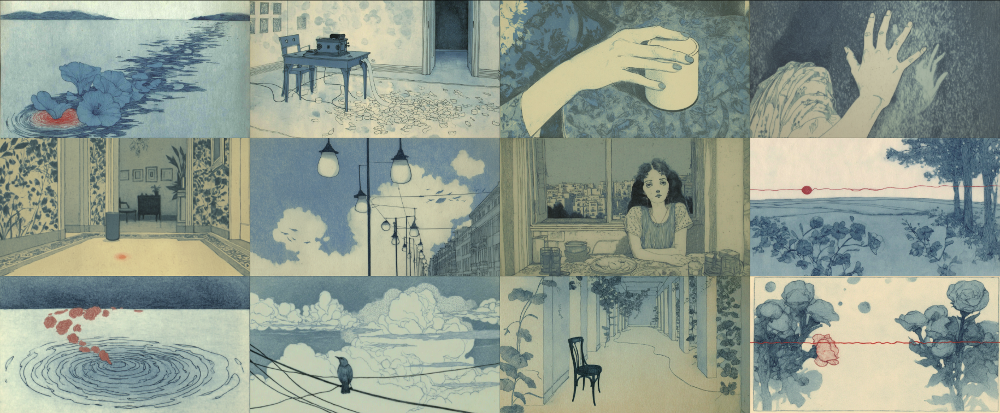

Afterwards

The Concept
In an age where people increasingly rely on AI—tireless, compliant, never arguing—are we losing the capacity to face real intimacy? This two-minute short film, through symbols of a lone bird, a hand, vines, and a totemic figure, contrasts the comfort of seamless responses with the fragile tension of human love. Cool tones of blue and gray, interrupted by red lifelines, frame the question: Is a response without hesitation or friction still true understanding?
Visual narratives are not just about what you see, but what you feel. In this project, I explored the relationship between silence and noise using AI generation tools.
Tools used: MidJourney, Jimeng, Kling, Suno.
